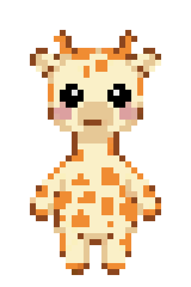
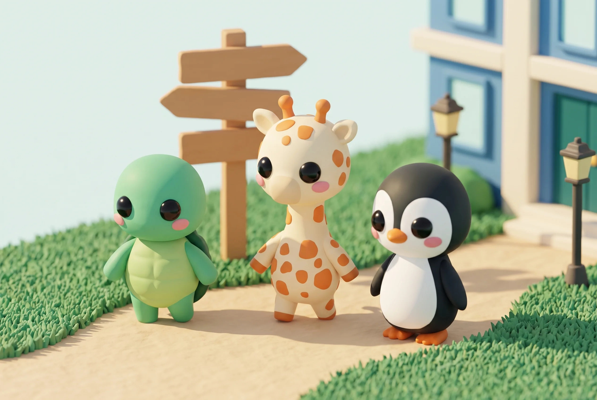
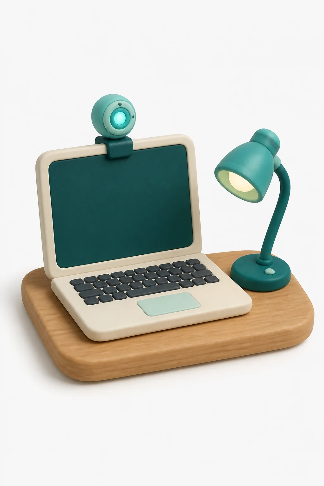
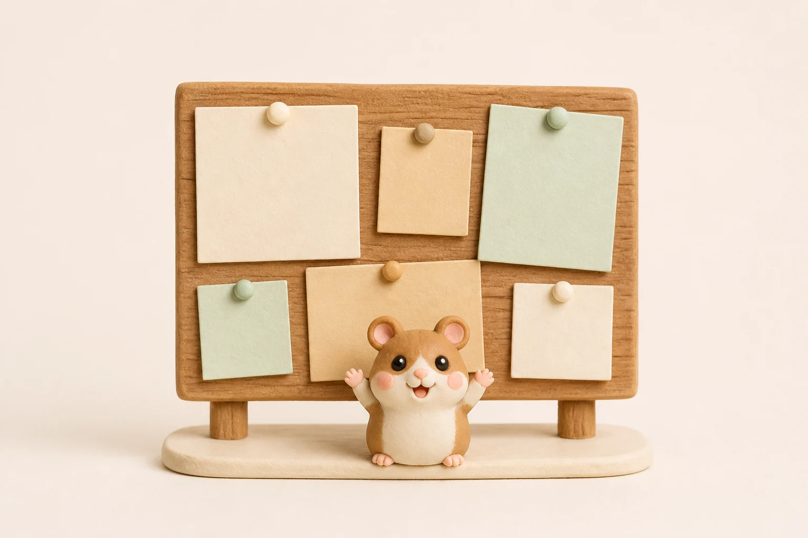
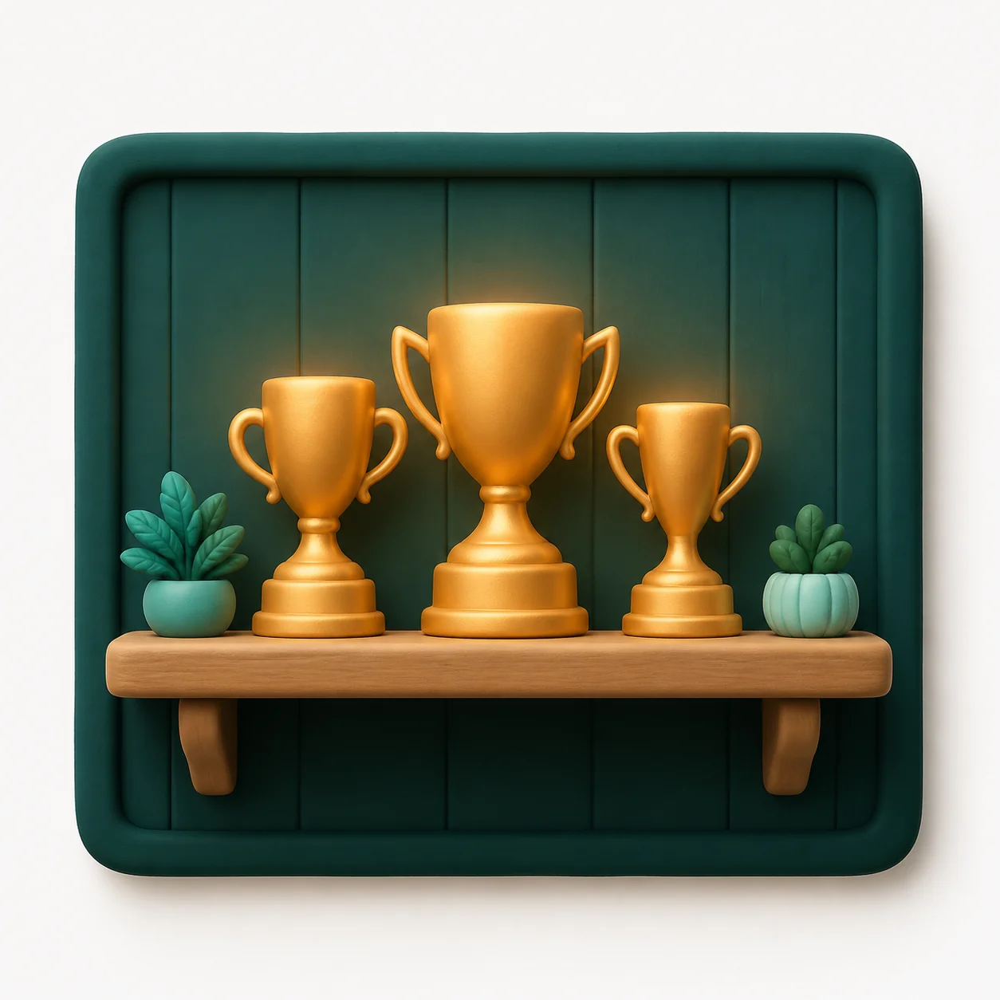
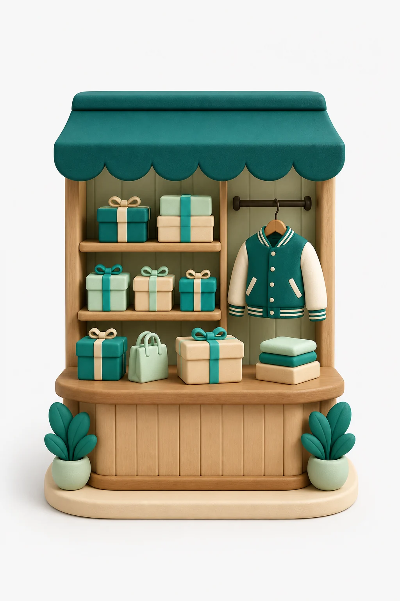

카메라의 약속
카메라는 곁에 있을 뿐이에요.
월드에 들어오면 10초 동안 내 평소 자세를 익혀요. 그다음엔 조용히 볼 뿐, 점수도 등급도 매기지 않아요. 좋음·주의·나쁨 세 가지 상태만 세어 두었다가, 세션이 끝나면 숫자로만 보여 줘요.

서버로 간 프레임
0장
분석은 브라우저 안에서 끝나요. 영상도, 좌표도 밖으로 나가지 않아요.

기린캠퍼스
기린캠퍼스에 오면 카메라가 함께 앉아요. 카메라가 봐 준 시간만큼 코인이 되고, 코인은 내 캐릭터의 하루가 돼요.






자세는 점수가 아니에요
앉아 있는 시간이 쌓여요
쌓인 만큼 세계가 자라요
월드에 들어오면 10초 동안 내 평소 자세를 익혀요. 그다음엔 조용히 볼 뿐, 점수도 등급도 매기지 않아요. 좋음·주의·나쁨 세 가지 상태만 세어 두었다가, 세션이 끝나면 숫자로만 보여 줘요.
분석은 브라우저 안에서 끝나요. 영상도, 좌표도 밖으로 나가지 않아요.
여덟 캐릭터 중 하나로 캠퍼스를 걸어요. 상점 아이템은 종마다 다르게 어울려요 — 시작은 누구여도 괜찮아요.
가장 많이 받는 일곱 가지예요. 더 궁금한 건 캠퍼스 안 게시판에서 만나요.
아무 데도 안 가요. 분석은 브라우저 안에서 끝나고, 영상도 좌표도 서버로 보내지 않아요. 세션이 끝나면 카메라도 함께 꺼져요.
아니요. 좋음·주의·나쁨 세 가지 상태만 조용히 셀 뿐, 점수도 등급도 없어요. 회고에서도 해석 없이 숫자만 보여 줘요.
웹캠 달린 PC와 크롬이면 돼요. 설치할 것도, 결제할 것도 없어요. 데스크톱 화면에 맞춰 만들었어요.
기록은 계속 이어져요. 앉기는 화면 전환일 뿐이라, 스트레칭하러 다녀와도 기록이 끊기지 않아요.
카메라가 봐 준 시간만큼 들어와요. 5분에 10코인부터 시작해서 하루 최대 300코인이에요. 자세가 좋다고 더 주지는 않아요.
같은 캠퍼스에서 만나요. 서로에게 보이는 건 닉네임과 캐릭터뿐이고, 카메라 화면은 누구에게도 보이지 않아요.
네, 지금은 전부 무료예요. 가입도 필요 없어요 — 웹캠 하나면 오늘부터 앉을 수 있어요.